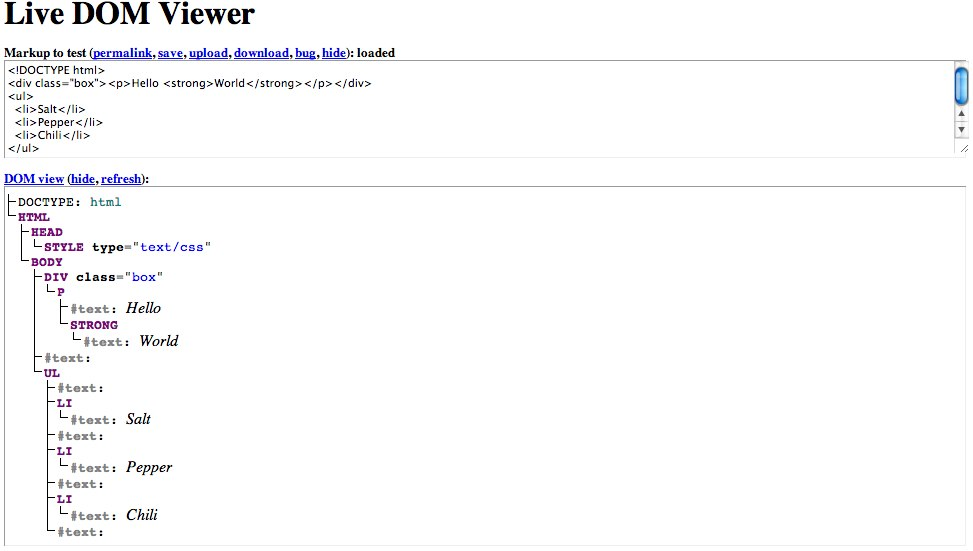

Hallå!

kasia@drzyzga.pl
kasia@spotify.com
@kaaes
Hello JavaScript
Na dobry początek
http://www.flickr.com/photos/nathansmith/4704268314/
JavaScript w Twojej lodówce?
jeszcze nie...
…ale…
Źródło: http://www.flickr.com/photos/gadgetgirl70/289011883/
…ale


http://firefoxos.info/
Mmm, Vanilla JS
Źródło: http://www.flickr.com/photos/kendiala/99726808/
jQuery
32KB, Minified and Gzipped
1 HTTP requestJavaScript
0 KB,
0 HTTP requestsjQuery
$('div');
$('#id');
$('.class');
$('#container li');
$('#large:nth-child(even)');
JavaScript
document.querySelector('div');
document.querySelector('#id');
document.querySelector('.class');
document.querySelectorAll('#container li');
document.querySelectorAll("#large:nth-child(even)");jQuery
$('div');
$('#id');
$('.class');
$('#container li');
$('#large:nth-child(even)');
JavaScript
function $(selector) {
var elements = document.querySelectorAll(selector);
return elements.length <= 1 ? elements[0] : elements;
}
$('div');
$('#id');
$('.class');
$('#container li');
$('#large:nth-child(even)');jQuery
var myImg = $('<img/>');
myImg.addClass('foo');
myImg.toggleClass('foo');
myImg.attr('alt', 'My image');
myImg.data('name', 'Some name');JavaScript
var myImg = document.createElement('img');
myImg.classList.add('foo');
myImg.classList.toggle('foo');
myImg.setAttribute('alt', 'My image');
myImg.dataset.name = 'Some name';jQuery
$('#myEl').click(callbackFn);
$('a').click(callbackFn);
$('ul').on('click', 'a', callbackFn);JavaScript
var myEl = document.querySelector('#myEl');
myEl.addEventListener('click', callbackFn);
[].forEach.call(document.querySelectorAll('a'), function(el) {
el.addEventListener("click", callbackFn, false);
});
document.addEventListener('click', function(e) {
if (e.target.matchesSelector('ul a')) { /* callbackFn */ }
}, false);Frameworki czy Vanilla JavaScript?
to zależy!

Developer Tools
⌘ + ⌥ + I
ctrl + shift + I
Źródło: http://www.flickr.com/photos/75905404@N00/7126147125/
JavaScript - istotne części
Źródło: http://www.flickr.com/photos/pureblacklove/6299786217/
DOM – zabawa klockami
Źródło: http://www.flickr.com/photos/owly/1856923676/
Document Object Model
od HTML do JavaScriptu
HTMLElements – własności i metody
Tworzenie elementów DOM
Animacje w JS
Źródło: http://www.flickr.com/photos/ujh/4307773392/
Eventy
Źródło: http://www.flickr.com/photos/kevindean/4467694685/